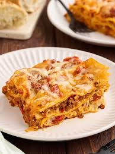

Lasagna recipe

Homemade lasagna isn't as hard to make as it seems. Don't be intimidated by all the layers of delicious Italian flavor — try this homemade lasagna recipe today!
ingredients
- Meat:
- A diced onion is cooked until translucent with the ground meat
- You'll need a can of tomato sauce and a can of crushed tomatoes.
- For fresh flavor, chop two tablespoons of parsley and crush one clove of garlic.
- A dash of sugar balances out all of the acidity from the tomatoes.
- This homemade lasagna is seasoned with dried basil, dried oregano, salt, and black pepper
- The cheese layer is made up of cottage cheese and Parmesan. You'll also need shredded mozzarella.
- Eggs make the cheese layer extra creamy. Plus, they act as a binding agent (which means they hold the layer together).
Steps
- Cook the meat
- Cook the noodles
- Make the cheese layer
- Assemble the lasagna:
- Bake the lasagna
Home